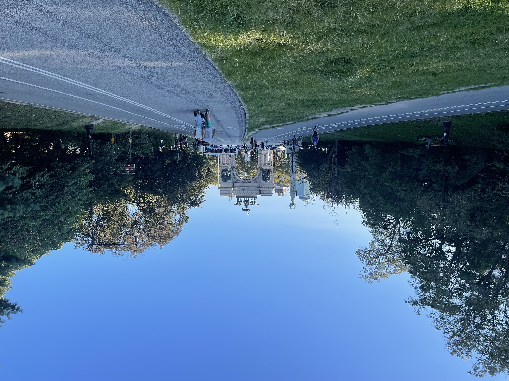
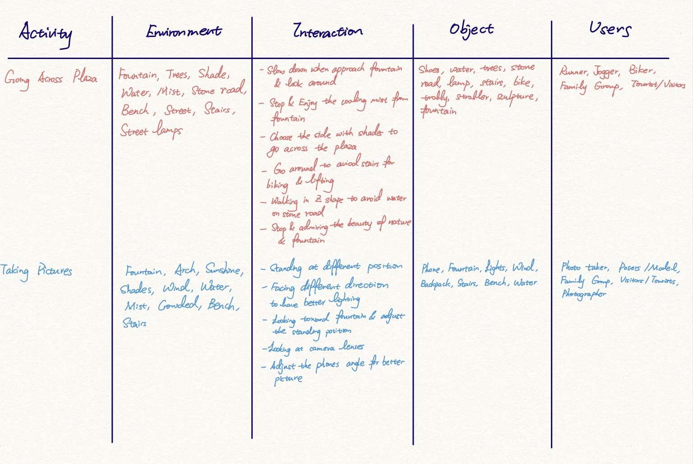
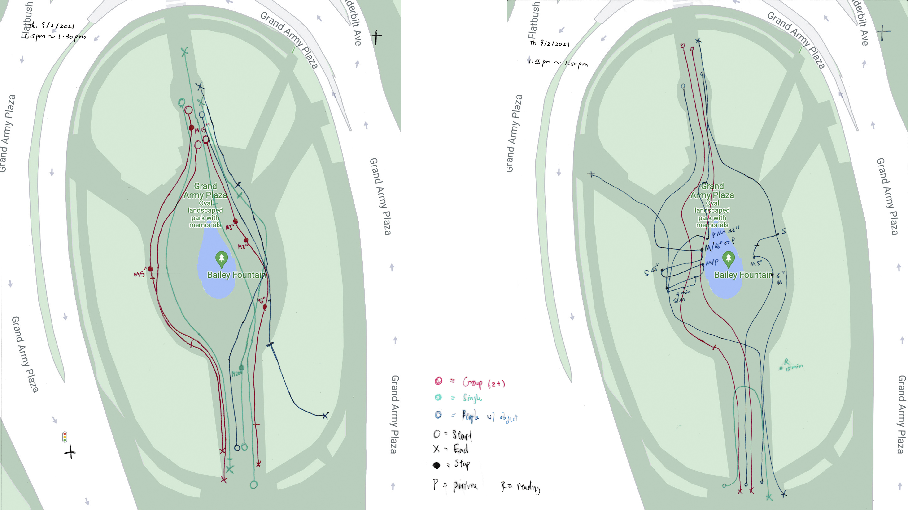
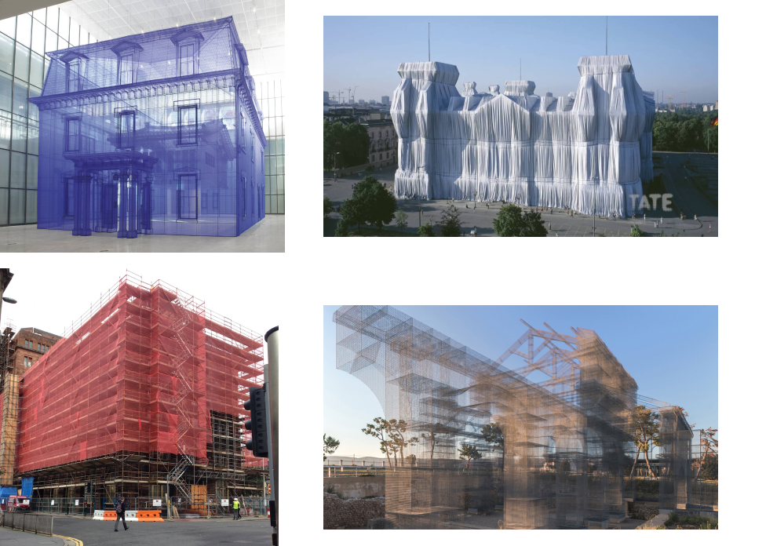
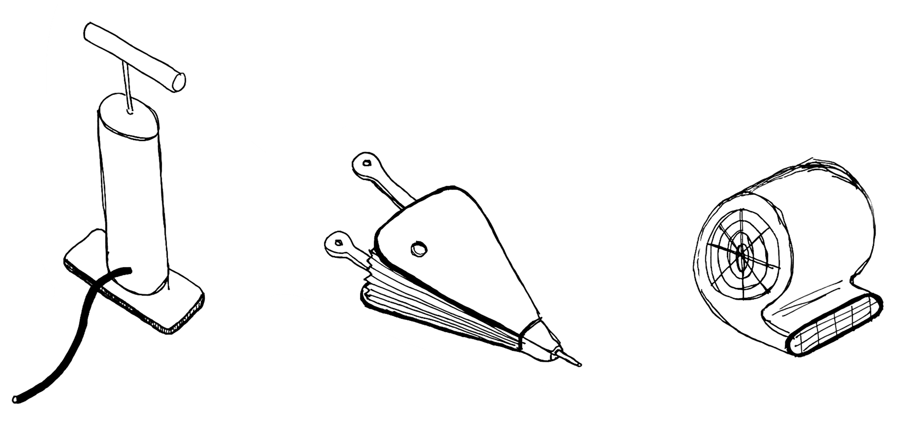
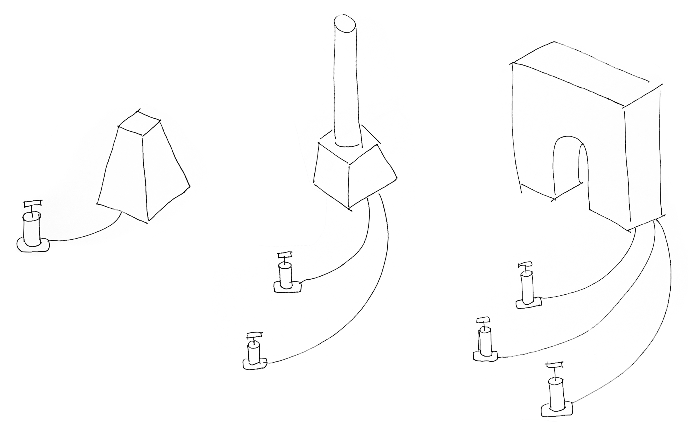

Instruction Sets for Strangers Design Methods
Peilin Chen & Franco Chen
Site Selection
Site Location & Enviroment Analysis
The elliptical plot of land defined by the intersection of Flatbush Ave, Plaza St W,
and Vanderbilt Ave is known as Grand Army Plaza. On all sides, the plaza is surrounded
by 4 lanes of roundabout traffic, but offers a couple of access points for pedestrians
to the north and to the south. Ultimately, this plaza leads into the larger Prospect Park,
and serves as an open forum space, allowing for the occurrence of markets and impromptu
large gatherings.
Our reason for selecting this site as the basis for our intervention is due to three factors.
1. The site acts as an island of sorts, separated from the larger context by roadways
and heavy vehicular traffic. This is interesting because of the participatory nature
of the pedestrians who enter the plaza - it takes effort for them to venture across.
2. In addition, the site benefits from its proximity to the entrance of Prospect Park
and the Grand Army Plaza subway stop, effectively creating a thoroughfare between the two.
Not only is the plaza participatory by pedestrians, it's also considered essential.
3. The entrance to Prospect Park plays host to various events throughout the year and
becomes a dynamic element that tends to spill traffic over onto the Plaza.

1.1 Grand Army Plaza & Prospect Heights, Brooklyn

1.2 Grand Army Plaza Feature Highlights
Site History
Grand Army Plaza was initially conceived in 1866 as “The Plaza,” the decorated entrance to the (then newly planned) Prospect Park which sought to distance visitors from the chaos of the city beyond. The constituent parts of the Plaza as we recognize them today came subsequently, with the Soldiers and Sailers Memorial Arch in 1892, the Four Columns in 1896, the Bailey Fountain in 1932, and the bust of John F Kennedy in 1965. Early on, during the inception of the plaza, thoroughfares surrounding the park were utilized primarily by trolleys. It was only with the advent of the automobile did traffic become a serious problem, even prompting a site specific “death-o-meter” which tracked traffic fatalities across Brooklyn. Although the site has received mixed reviews throughout its time, it was eventually designated an official city landmark in 1975, effectively preserving all the aspects of the plaza we see today.



Site Research
AEIOU
We took careful observation of people's behavior and interaction with their surrounding areas in the Grand Army Plaza. We noticed that the major two activities happening through the Grand Army Plaza are going across the plaza and taking pictures in the plaza. We evaluate how those users interact with one another and their interactions based on different environmental elements. In the end, we outlined the AEIOU form below to summarize the interaction between people with people, people with objects, and object with object.

1.3 AEIOU Form
In addition to summarizing people’s interactions and behavior, we also recorded the type of users that appear throughout the observation time. The list consists of readers, seniors, tourists/visitors, dog walkers, moms with strollers and babies, couples, trainers/runners/joggers, bikers, and family groups. There is a diverse combination of demographics within the area, and we are happy to see how we can design our interactive objects to incorporate most types of users in the future.

Behavior Mapping
We observed and recorded user behavior and tracked their walking paths through an observational study. Below are the Behavior Mapping diagrams.

1.4 Behavior Mapping Left: Th, 1:15 pm ~ 1:30 pm; Right: Th 1:35pm ~ 1:50pm
Site Interventions
Brainsorming Tree

1.5 Brainsorming Tree
Intervetions List & Consideration
Based on the interaction we observed and the environmental information we gained, we
brainstormed different kinds of interactable activities based on three major categories.
They are improving the existing experience, mimicking something from different time/location,
and exaggerating the current environment elements/objects. Here are a list of ideas we formed:
1. Inflatable object
2. Podium
3. Interactable picturing experience
4. Lighting equipments
Intervetions Choice
Instead of choosing one of the ideas from all of those, we decided to combine the inflatable
object and the interactive picturing experience together. Since Grand Army Plaza is a giant
oval-shaped park, it is really hard for people to visualize everything through a single glimpse and
even harder to include all the beautiful historical architectures in one take. As a result, we
wish to be able to bring the most symbolic objects around the park into a centralized area and give
users the ability to build things up by themselves.
In detail, we picture an inflatable object on the ground which has been pre-shaped into
the arch and columns found throughout the plaza. They will be situated across the cobblestones
surrounding the centrally located fountain. To facilitate inflation, we’ll provide tools that
blow air so that users can utilize these to bring 2-dimensional shapes into 3-dimensional objects.
If the inflatable object is especially large, it may require cooperation between multiple users with
air flow tools to reveal the final product. After the objects have been inflated, it will retain its
form until the air is slowly depleted. Users will be able to take photos with these inflated objects
and fully capture the fabulous plaza objects in a single frame. The objects eventually lose their air
(and form) and return to being 2D shapes on the ground, patiently awaiting the next curious crowd.
Prototyping
Prototype Percedents and References

1.6 Clockwise from Top Left: Do Ho Suh, Christo and Jeanne Claude, Edoardo Tresoldi, Tarp on building
Prototype Sketches

1.7 Types of Air Flow Tools

1.8 Types of Inflatable Objects
Prototype Materials
1. Inflatable Materials
2. Seams
3. Anchor
4. Pumps
Prototype Potential Issues
1. Air flow might not be sufficient for a proper inflation
2. Inflatable might lose too much air
3. Inflatable might deflate quick enough
4. Strong winds interfering with inflation
5. Tears in the inflatable
6. Might not be possible for more than one person to pump at once
Summary
Grand Army Plaza was designed in 1866 as a passing entrance to Prospect Park, and it has
remained just that. Users, or more adequately recognized, passersby, spend little time in the
plaza despite it being a destination for the neighborhood, and wider yet, the borough. Its vast
grounds, imagined for large gatherings and places for interaction have remained barren, devoid
of happenings. The parks commission noted in 1888 “It is suggestive of Siberia in winter and
Sahara in the summer."
Through our observations, we believe we might find some success in taking the
opposite approach to how the plaza was designed. By bringing all elements and features of
the plaza together, they’re experienced more readily as a group, and not as a series of signifiers
guiding one towards Prospect Park. We hope our intervention will be enticing enough to give pause
to those who might otherwise pass through the plaza, and enticing enough to those who stay, to
stay just a slight moment longer.